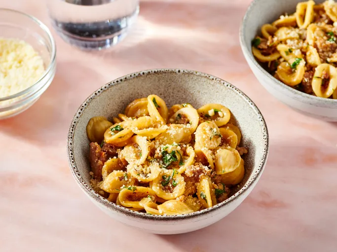

Home
One Pan Orecchiette Pasta recipe

This delicious orecchiette pasta recipe only has a handful of ingredients, is very cheap to make, and most importantly, only uses one pan or pot for the entire procedure.
| Preparation Time |
15 mins |
| Cook Time |
25 mins |
| Total Time |
40 mins |
| Servings |
2 |
Ingredients
- 2 tablespoons olive oil
- ½ onion, diced
- salt to taste
- 8 ounces spicy Italian sausages, casings removed
- 3 ½ cups low-sodium chicken broth, divided, or as needed
- 1 ¼ cups orecchiette pasta, or more to taste
- ½ cup roughly chopped arugula, or to taste
- ¼ cup finely grated Parmigiano-Reggiano cheese, or to taste
Instructions
- Gather the ingredients.
- Heat olive oil in a large, deep skillet over medium heat. Add onion with a pinch of salt; cook and stir until onion has softened and turned translucent, about 5 minutes. Stir in sausage and cook until browned, 5 to 7 minutes.
- Pour 1 1/2 cups chicken broth into sausage mixture and bring to a boil while scraping the browned bits of food off of the bottom of the pan with a wooden spoon.
- Add orecchiette pasta; cook and stir pasta in hot broth, adding remaining broth when liquid is absorbed, until pasta is cooked through and most of the broth is absorbed, about 15 minutes.
- Stir arugula into sausage-pasta mixture until arugula wilts.
- Ladle pasta into bowls and sprinkle with Parmigiano-Reggiano cheese.